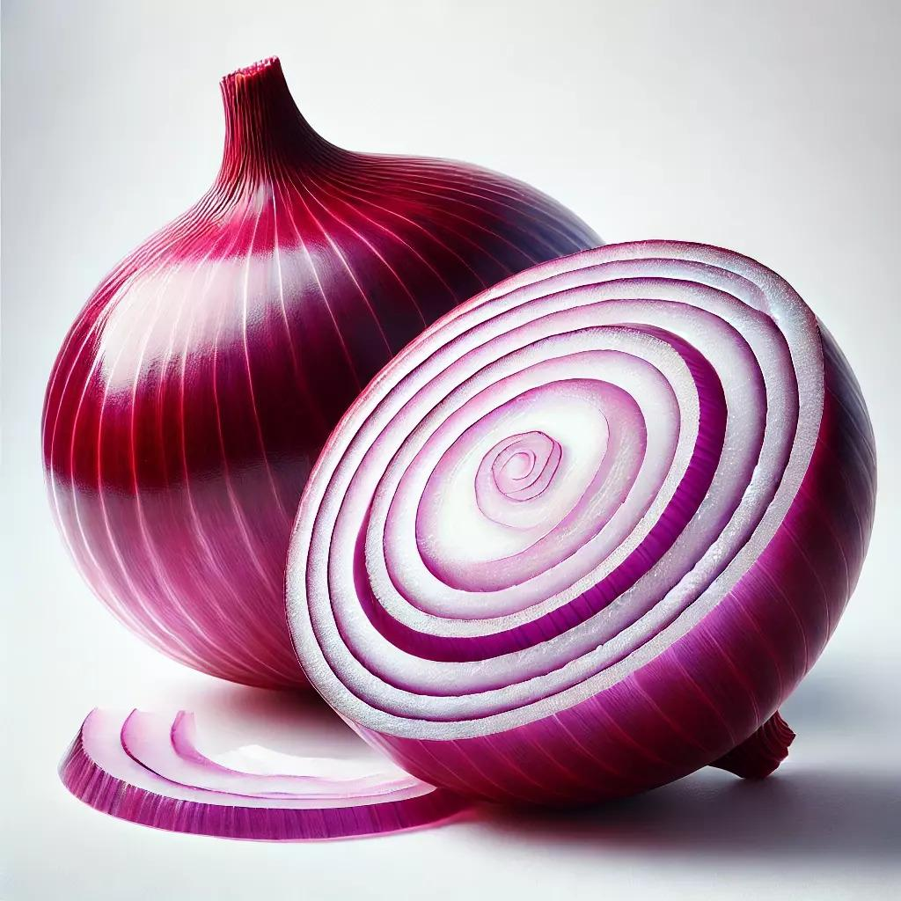

Jedná se o dvouletou až vytrvalou (spíše jen teoreticky[chybí zdroj]) rostlinu, na bázi s velkou cibulí. Stonek je dosti robustní, dole až 3 cm v průměru, je dutý. Listy jsou jednoduché, přisedlé, s listovými pochvami. Čepele jsou celokrajné, polooblé se souběžnou žilnatinou. Květy jsou oboupohlavní, ve vrcholovém květenství, jedná se o hlávkovitě stažený zdánlivý okolík, ve skutečnosti to je stažené vrcholičnaté květenství zvané šroubel. Květenství je podepřeno toulcem. Pacibulky jsou v květenství přítomny jen někdy. Okvětí se skládá ze 6 okvětních lístků bílé až narůžovělé barvy, se středním zeleným pruhem. Tyčinek je 6. Gyneceum je složeno ze 3 plodolistů, je synkarpní, semeník je svrchní. Plodem je tobolka.

Alan Deutsch, 2A